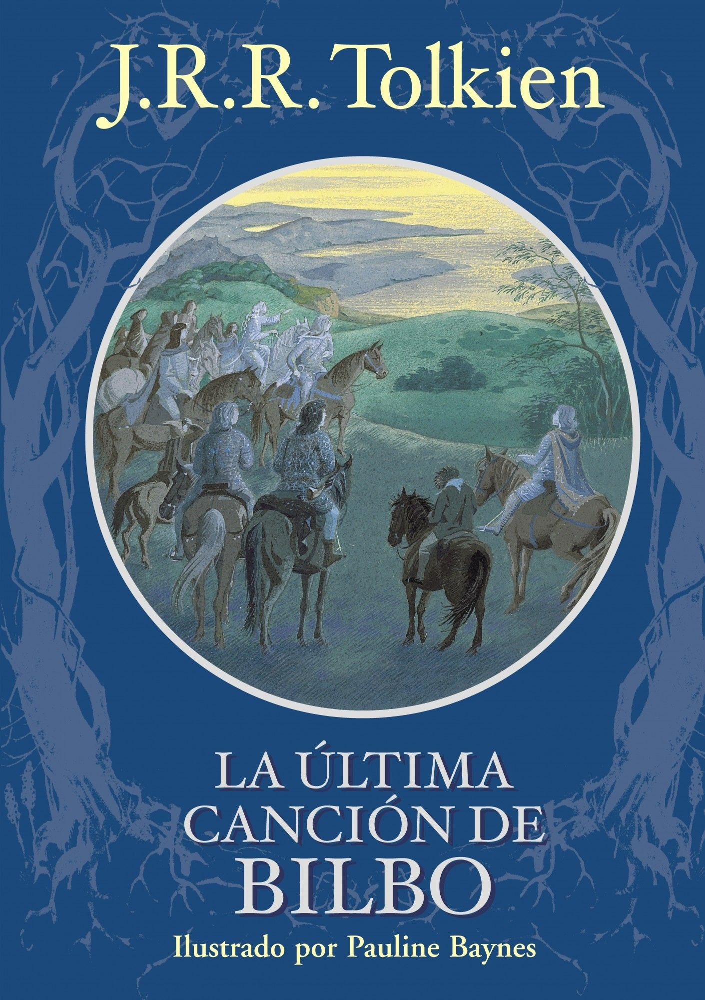

Este breve y hermoso poema está considerado por muchos como el epílogo de J.R.R. Tolkien a su obra clásica 'El Señor de los Anillos'
Bilbo Bolsón, famoso aventurero Hobbit y Portador del Anillo Único, llega a los Puertos Grises para embarcar en la nave blanca que
parte hacia el Oeste. Es aquí donde compone su última canción, en la que reflexiona sobre su marcha de la Tierra Media y la travesía
que lo llevará a las Tierras Imperecederas, más allá del ocaso. Conmovedora y lírica, esta canción expresa tanto el anhelo por levar el
ancla en este último viaje como una afectuosa despedida para los amigos que se quedan atrás.
Fuente: Wikipedia